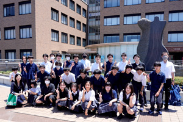
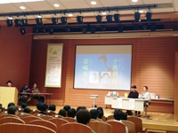

ITサービスへつながる就職先
株式会社タケダへ進んだ卒業生がいます。同社は高松でドコモショップ運営に加え、企業のIT導入支援、PCなどのハードウェア修理、ホームページ制作を行っています。情報活用と対人対応の両方が関わる仕事です。
進路と卒業生
情報処理、表現、事務活用の力を、電子部品、製造、販売、公共分野などの仕事へつなげています。
生徒は、職種、仕事内容、必要な資格、研修制度を調べ、授業で身につけた力をどの仕事で生かすか考えます。
株式会社タケダへ進んだ卒業生がいます。同社は高松でドコモショップ運営に加え、企業のIT導入支援、PCなどのハードウェア修理、ホームページ制作を行っています。情報活用と対人対応の両方が関わる仕事です。
情報システム系では、プログラマーやシステムエンジニアに必要な論理的思考を養います。
2024年はゲーム業界の動向、専門職の仕事内容、目標設定、進路選択について講演を受けました。


